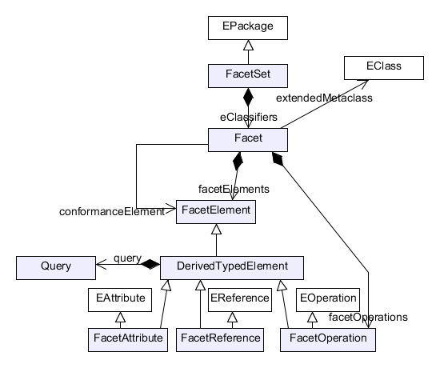
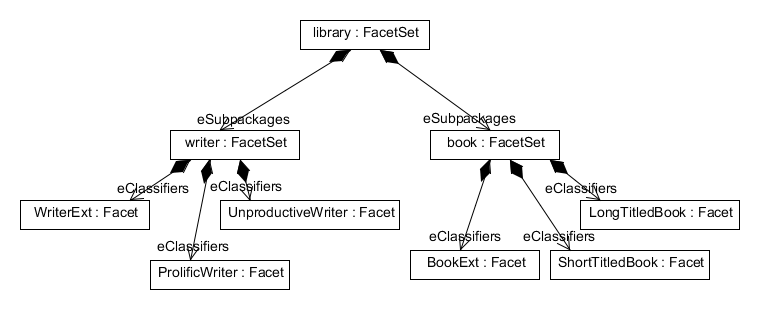
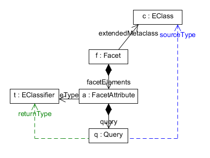
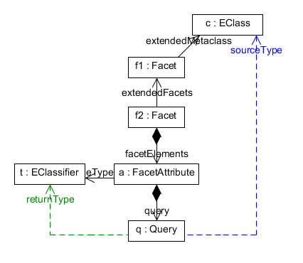
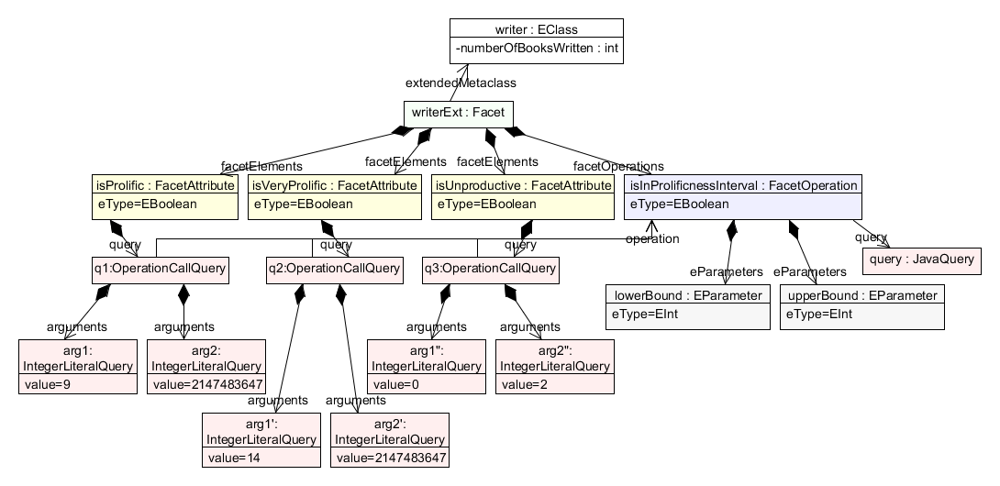
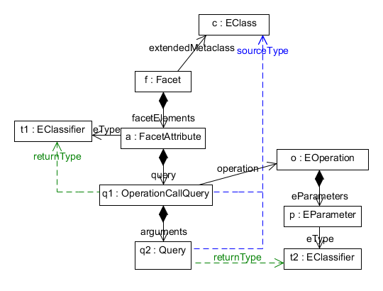

A central concept in EMF Facet is the Facet. A Facet is a kind of virtual metaclass extension. Those "virtual" metaclasses can never be actually instantiated. Instead, a model element is said to conform to a Facet if it matches a predicate defined on this Facet.
For example, let's assume we have a metamodel with an "Employee" metaclass, and we have defined two Facets named "Manager" and "Developer". We can have a model containing instances of the Employee metaclass; some of these may conform to the "Manager" Facet, and others may conform to the "Developer" Facet.
Additionally, a Facet may contain facet elements: attributes, references and operations. These Facet elements always have to be derived.
Defining a Facet can be useful:
Facets are contained in FacetSets. A FacetSet — as its name indicates — is a set of Facets. A FacetSet is defined in a model that is most commonly saved in an EMF XMI file which must conform to the efacet metamodel (http://www.eclipse.org/papyrus/emf/facet/efacet/0.2.incubation/efacet). A FacetSet model file must have the file extension ".efacet".
Here is what the efacet metamodel looks like. This diagram was a bit simplified to show only the most important concepts:

A FacetSet can contain other FacetSets, using the eSubpackages containment reference:

In this example, we define a FacetSet for a library metamodel. We sub-divide the "library" FacetSet into two FacetSets : one dedicated to writers and the other one to books. The "writer" FacetSet contains Facets related to writers, and the "book" FacetSet contains Facets related to books.
In order for a FacetSet to be available at runtime in the FacetSet catalog, it must be registered with extension point org.eclipse.papyrus.emf.facet.util.emf.core.modeldeclaration, like this:
<extension point="org.eclipse.papyrus.emf.facet.util.emf.core.modeldeclaration"> <modeldeclaration file="myFacetSet.efacet"/> </extension>
Also, your ".efacet" file must be included in your plug-in's build.properties in order to be available in deployed plug-ins.
FacetSets that have been registered are available from the FacetSet catalog. For example, if you want to retrieve the list of all registered FacetSets:
IFacetSetCatalogManager catalogMgr = IFacetSetCatalogManagerFactory.DEFAULT
.getOrCreateFacetSetCatalogManager(new ResourceSetImpl());
Collection<FacetSet> allFacetSets = catalogMgr.getRegisteredFacetSets();
Then you can for example look for a FacetSet with a given name in the previous list:
FacetSet myFacetSet = FacetUtils.getFacetSet(allFacetSets, "MyFacetSet");
A Query in EMF Facet is used to compute a derived typed element (i.e. a Facet attribute, reference or operation). A query's only purpose is to lend its value to its containing derived typed element.
A query is evaluated on a source element, and it returns a value.
A query's source type is the type of the element the query is evaluated on.
A derived typed element can only be evaluated on instances of the metaclass extended by the Facet in which the derived typed element is defined, for instances that conform to this Facet.
So, there are two ways to determine the source type of a derived typed element.
The first case is when the Facet that contains the derived typed element extends a metaclass "directly"; then the source type is this metaclass that is extended by the Facet.
Here is an example where a query implements a FacetAttribute:

The query's source type is the metaclass extended by the Facet in which the FacetAttribute implemented by the query is defined.
The second case is when a Facet extends another Facet: the source type of the derived typed element is now the metaclass extended by the topmost Facet in the inheritance tree.
Here is a similar example where the Facet extends another Facet:

The query's source type is now the metaclass extended by the Facet extended by a second Facet in which the FacetAttribute implemented by the query is defined.
A query implements a derived typed element (such as a Facet attribute, reference or operation) to give it a value. As such, the return type of a query (the type of the value returned by the query) and the multiplicity of a query (whether the query returns one or more elements) are the same as the type and multiplicity of the derived typed element containing this query.
So in our example, the return type of query q is the EClassifier t, since t is the eType of the FacetAttribute a (which is the derived typed element that the query implements).
EMF Facet provides a query type to define Java queries. You must define your Java queries in a Java class that implements the interface org.eclipse.papyrus.emf.facet.query.java.core.IJavaQuery2. The IJavaQuery2 interface is parameterized with the source type and return type. For example, IJavaQuery2<Book, Boolean> indicates that the query's source type is Book, and the return type is Boolean.
For example, this query takes a Book and returns a boolean that indicates whether the given book has a long title (i.e. more than 30 characters in this example):
public class HasLongTitle implements IJavaQuery2<Book, Boolean> {
public Boolean evaluate(final Book book, final IParameterValueList2 parameterValues,
final IFacetManager facetManager) throws DerivedTypedElementException {
return book.getTitle().length() > 30;
}
}
EMF Facet also provides a few pre-defined query types that you can use when you only need a constant literal value:
You can call a FacetOperation from another Facet attribute, reference or operation. For this, you implement the Facet element with an OperationCallQuery (which is a pre-defined query type). This query can take literal arguments (in the form of other queries), that will be evaluated and passed to the called FacetOperation. This can be useful in order to factorize the implementation of your Facet elements.
Example:

In this example, we create a Facet to extend a "Writer" EClass, that represents a writer that has written a certain number of books, as represented by the attribute "numberOfBooksWritten". On this Facet, we define 3 boolean FacetAttributes, that classify the writer as "unproductive", "prolific", or "very prolific". To help implement these 3 Facet attributes, instead of implementing 3 separate queries, we create a more generic operation "isInProlificnessInterval" in order to factorize code. This operation takes 2 parameters (lower and upper bound), and returns whether the "numberOfBooksWritten" of the writer is between the lower and upper bounds. This FacetOperation is implemented by a JavaQuery. Once this FacetOperation is written, we can re-use it to create the 3 FacetAttributes. For this, we define the implementation of each FacetAttribute with an OperationCallQuery that references the operation "isInProlificnessInterval". Each OperationCallQuery contains two IntegerLiteralQuery, that give the values for the lower and upper bounds that are the parameters of the called FacetOperation.
The previous example only makes use of the IntegerLiteralQuery to return literal integer values. But you can use any query type: see Literal Query Types.
In Query source and return type, we saw that the query's return type is the type of the FacetAttribute implemented by this query. But with an OperationCallQuery, we have a special case: the OperationCallQuery contains other queries used as arguments for the operation called by the OperationCallQuery.
The source and return type of an operation call query are computed in the same way as described in Query source and return type. But the argument query is a bit special: its source type is the same as that of its parent OperationCallQuery, and its return type is the type of the corresponding parameter (i.e., the parameter at the same index in the list of parameters of the operation as the query's parameter in the list of arguments of the OperationCallQuery).
Here is an example with an operation that takes one parameter:

The Facet manager is used to manipulate Facets. To obtain an instance of the FacetManager, you must ask the Facet manager factory:
IFacetManager facetManager = IFacetManagerFactory.DEFAULT.getOrCreateFacetManager(resourceSet);
The resourceSet parameter must be the same ResourceSet that was used to instantiate a FacetSet catalog manager in IFacetSetCatalogManagerFactory#getOrCreateFacetSetCatalogManager.
The Facet manager provides these important methods:
Copyright © 2012 Mia-Software. All rights reserved. This program and the accompanying materials are made available under the terms of the Eclipse Public License 2.0 which accompanies this distribution, and is available at https://www.eclipse.org/legal/epl-2.0/. Contributors: Nicolas Bros (Mia-Software); Laurent Pichierri (Soft-Maint) - Bug 375789 - Documentation